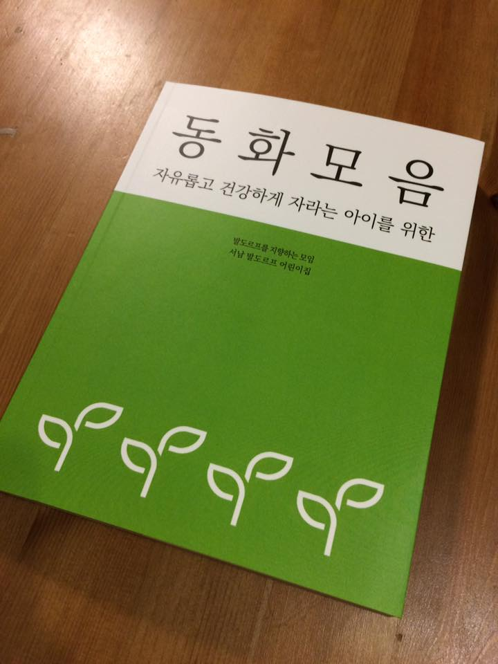

2016년을 돌아보자.
한 줄 요약 : 아는 만큼 모르게 된다.
내가 뽑은 올해의 키워드 : 민주주의
작년부터 조금씩 민주주의식 회의 제도나 조직 같은 것에 관심이 있었고, 올해는 정의당 서울시당에서 주관한 정치 아카데미를 통해 민주주의 공부를 조금이나마 시작한 상태에서, 4500만명이 경악하는 사건이 터졌다. (500만명은 시각이 다르다.) 사건의 흐름과 이면에서 흐르는 이야기들을 다양한 시각으로 해석해 볼 수도 있었고, 내가 민주주의를 정말로 잘 모르고 있다는 점도 깨달은 한 해였다.
내가 뽑은 올해의 기술 : Docker
처음엔 '왜 이런 고통을 내게...'라는 느낌이었지만, 한 번 빠져들자 헤어나오지 못하고 있다. 내 컴퓨터에서 어떤 도구를 실행할 때, 관련 패키지를 설치하지 않아도 된다는 점이 굉장히 매력적이다. mysql, postgresql 같은 db는 말할 것도 없고, node나 python 같은 언어도 굳이 설치할 필요가 없다. (지속가능하게 깨끗한 개발환경?)
배포 환경에 올릴 때는 패키지 의존성이나 서버 환경을 크게 고민하지 않아도 되고, 코드 속 민감한 정보들은 환경 변수로 관리하기 쉬워지니 이 역시 좋다.
계획과 성과
아래는 2016년에 하고 싶었던 일 목록이다. 계획대로 진행한 건 +++, 약간이나마 손을 댄 것은 +, 손 대지 못한 건 -로 표시해보았다.
공부
- ES6 + React:
+회사 프로젝트를 ES6로 진행하면서 살짝 손을 대 보았다. 짝 코딩해준 아웃사이더님이 탁월한 node 개발자셔서 많이 배웠으나, 이후로 더 손대지 않고 있어서... 일부러 이슈도 하나 맡아 보고, 로컬 개발 환경에 docker-compose도 끼얹어 보고 하고 있다. '기본이 비동기'라는 철학이 아직 낯설다. (자꾸 까먹는return) - AsciiDoc:
+
- WriteTheDocs 서울 모임: 2016년에 할 수 있을 거라곤 생각하지 못했는데, 파이콘 APAC에서 장소를 제공받을 수 있어서 진행한 모임. 나는 AsciiDoc 문서를 인디자인으로 바로 옮길 수 있을까 싶어 실험했던 내용으로, 인디자인을 활용한 자동 조판 실험이라는 발표를 했는데 완결성 면에서 조금 떨어졌던 것 같다. 2017년엔 좀더 발전하고 다듬어서 다시 이야기할 수 있었으면 좋겠다.
- Google Analytics:
-책은 많이 샀는데... - Python + Django:
+++Django ORM과 관련된 블로그 글이나 사내 발표 등을 준비하면서 좀더 깊이 들여다보게 된 듯. Django 소스코드도 조금 살펴보았다. - Data Visualization:
+++스터디 모임에서 회계를 맡고 있어서, 책임감 때문에라도 꼭꼭 참석했다. (단, 모임에 나갔다고 해서 다 이해하고 돌아온 것 아니... ㅡㅜ) 아래는 스터디 했던 책.
- 에드워드 터프티의 The Visual Display of Quantitative Information
- 콜린 웨어의 데이터 시각화, 인지과학을 만나다
- 자크 베르탱의 Semiology of Graphics
- 이 스터디가 내게 끼친 영향은 아마도 회사 다음일 거다. 모인 분들이 다양한 지식을 전해줄 뿐만 아니라, 상황을 바라보는 시야도 넓혀주었다. 책 별로는, 터프티가 제일 재미있었고, 콜린 웨어는 조금 관심사가 맞지 않았고, 자크 베르탱은 어렵지만 존경할 만한 분이었다.
- English:
-새해엔 전화 영어를 등록해야지. - Sociocracy:
+++
- Maturing people:
-알면 알수록 모르는 게 더 많아지니, 섣불리 누구에게 뭘 가르쳐 줄 수가 없다. - Public Audio:
+중고 음향 기기 그룹과 장호준 음향 워크샵 그룹에 가입하면서, 그간 발전한 Public Audio의 세계에 놀라고 있다.
프로젝트
- Getting Real KR:
-어쩜 하나도 손을... 새해엔 좀더 해보자꾸나. - SSL Checker +a:
-코어 라이브러리를 개발할 필요가 사라졌다. 그러면 프론트 개발이 더 빨라져야 했을 텐데? (반성) - SC 2nd:
-CCLI에서 API를 제공한다고 해서 연락만 해 둔 상황. - hubtee:
#하나 붙이기에 조금 민망하긴 하지만 어쨌든... - 야신프로젝트:
-잠정 중단.
그 외
- 2015년보다 블로그 포스트 더 많이 올리기:
+++한국의 파이썬 소식을 주 1회 올리고 있다. 처음엔 가볍게 생각했는데, 이젠 죽을 지경이다. - 책 좀 읽자:
+샤오미 미패드2를 사면서, 지르기만 했던 전자책을 조금은 보게 되었다. 조금은. - 기념일 징크스 벗어나기:
+++기념일마다 아내를 실망시키지 않고자 최선을 다했다. 통장 상황은 그에 반비례한다.
예기치 않은 일
- offline: 작년 유아교육전의 악몽을 반복하기 싫어서, 8월 유아교육전 전에 쌍피님, 후얌얌님과 함께 급조한 창고 물류 관리 프로젝트. 즐거웠던 개발 과정은 창고 관리 서비스 개발 후기 - 스마트스터디의 '개발자'가 일하는 방식이란 글에서 자세히 설명하고 있다.
- buster: ghost를 로컬에서 작동시킨 후 static 사이트를 만들 때 사용하는 도구다. 원 저장소는 2년 전부터 업데이트가 되지 않아서 ghost 최신 버전에서는 문제가 있다. 이를 해결하고자 개인 저장소에 포크한 후 몇 가지 커밋을 추가했다.
- release.sh: 사내 릴리스 규칙을 사람이 일일이 따라하다보면 빠지는 과정도 있겠고 실수도 생길 여지가 많아서, 이를 자동으로 처리해주는 셸 스크립트를 만들었다. 셸의 유용성을 발견한 게 너무 신나서 재미있게 작업했던 프로젝트. 내년엔 node 프로젝트에도 적용해보려 한다. (이거 공개할 수 있을까?)
- 동화모음: 아이들이 다니는 어린이집에서 사용하는 동화책을 재편집/재조판했다. 동화책치고는 독특하게 그림이 전혀 없었는데, 그 덕에 편집하고 조판하는 과정이 그리 어렵진 않았다.

- 월간 이상한 모임: 이상한 모임에서 한 해 동안 진행했던 잡지 프로젝트. 교정/교열 감을 잃지 않고 싶어서 참가했지만, 책에서 중요한 부분은 역시나 기획. 기여도가 점점 떨어져서 다른 편집위원들께 굉장히 미안했다.
건강
작년 연말에 식도염으로 고생했는데, 올해 11월 말부터 식도염 증세가 도졌다. 두세 달 약을 먹어야 하고 그래도 낫지 않으면 내시경을 받아야... ㅡㅜ 먹고픈 음식은 많은데 먹지를 못하니 괴롭다. 날이 따뜻해지면 자전거도 좀 타고 하면서 건강해지자.
회사 생활
- 코드 리뷰: 올해 중반부터 회사에서 개발 중인 코드는 팀원 모두가 리뷰하고 나서 머지하자고 합의했다. 내 똥 코드를 코드답게 바꿔주시는 덕에, 코드 품질에 신경을 많이 쓰게 되었다. 또, 커밋도 깔끔하게 rebase하는 습관을 기를 수 있고. (아직도 깔끔한지는 모르겠지만...)
- 팀웍: 이보다 좋은 팀원들이 있을까 싶은데, 그래서 내가 너무 의존적이 되는 건 아닌가 걱정도 된다. 구름 위 어딘가에서 코딩하시는 것 같은 초월적 존재 스카리님, 프론트와 백엔드를 오가며 거대한 똥덩어리를 홀로 막아내고 계신 쌍피님, 나는 아무리 들어도 이해가 되지 않는 코덱들을 능수능란하게 다루시는 후얌얌님, 언제 읽고 보고 쓰는지 도무지 알 길이 없지만 모든 걸 알고 계신 토토님, 입사 한 달 만에 일 년을 같이 일한 것 같은 팀웍을 보여주신 아웃사이더님. 항상 고맙고 고맙고 고맙습니다.
- 팀 외부: 파이님이 퇴사하셨다. 내게 Django다운 Django를 알려주신 분. 아쉽지만 회사 밖에서 더 자주 만날 수 있길. 밀크티를 매개로 친해진 분께서 나를 진짜 홍차의 세계로 인도해 주셨다. 이 외에도 서로 존재는 알지만 대화는 해보지 않은 정의당 당원, 살짝 친해지나 싶었는데 이직하신 분, 예전보다 대화 횟수가 급격히 줄어든 몇몇 분이 머릿속을 스친다. 회사가 많이 커졌다. 이젠 성함과 별명을 모두 알지 못하겠다. 사내 아이디 생성은 여전히 나를 거치고 있음에도, 회사 외부에서 지나치면 동료인 줄 모를 것 같은 사람들이 늘고 있다. 그래서 신규 입사자의 첫 출근일에는 가급적 재택이나 휴가를 쓰지 않고, 얼굴을 한 번이라도 뵙고자 노력 중이다.
총평
내가 모르는 것이 점점 많아지고 있다는 건, 내가 배우고 있다는 뜻이기도 하겠지. 올해 초엔 살짝 정체기였지만, 봄을 지나면서는 내가 모르는 것이 뭔지 찾아내고 있다. 문제는, 학습 의욕은 넘치는데 막상 학습까지 이어진 경우가 드물었다는 점.
올해 넓혀둔 지경에, 내년에는 발자국을 남겨보자.